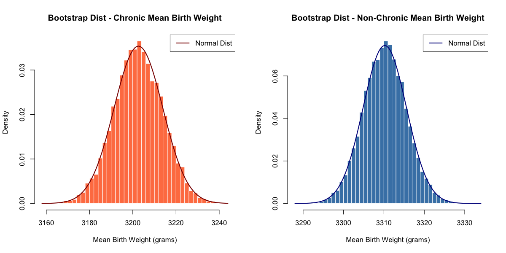

Question: Do births to mothers with a chronic condition (diabetes or hypertension) have a different mean detailed birth weight (dbwt) than births to mothers without a chronic condition?
Null hypothesis (\(H_0\)): \(\mu_{chronic} = \mu_{nonchronic}\) — the mean birth weight is the same for the chronic and non‑chronic groups.
Alternative hypothesis (\(H_1\)): \(\mu_{chronic} \neq \mu_{nonchronic}\) — the mean birth weight differs between the two groups.
Hypothesis test: two-sample t-test using R’s t.test() function to compare the means of the two independent groups with unequal variances.
Click to see code
df <-read.csv("data/cleaned/natality_cleaned.csv")#detailed birth weight outcome <-"dbwt"#creating chronic condition flag based on columns (true = chronic)df$chronic_condition <-ifelse( df$rf_pdiab ==1| df$rf_gdiab ==1| df$rf_phype ==1| df$rf_ghype ==1| df$rf_ehype ==1,1, 0)#splitting into chronic vs non-chronic groups group_chronic <- df %>%filter(chronic_condition ==1) %>%pull(outcome)group_nonchronic <- df %>%filter(chronic_condition ==0) %>%pull(outcome)#running independent samples t-test t_test_result <-t.test(group_chronic, group_nonchronic)print("T-Test Results:")
[1] "T-Test Results:"
Click to see code
print(t_test_result)
Welch Two Sample t-test
data: group_chronic and group_nonchronic
t = -8.6312, df = 2928.5, p-value < 2.2e-16
alternative hypothesis: true difference in means is not equal to 0
95 percent confidence interval:
-132.09633 -83.18935
sample estimates:
mean of x mean of y
3202.622 3310.265
[interpretation]
Question: Are different chronic conditions independent of admission to NICU?
Null hypothesis (\(H_0\)): The chronic condition (e.g., diabetes or hypertension) and NICU admission are independent.
Alternative hypothesis (\(H_1\)): The chronic condition and NICU admission are not independent (i.e., there is an association between them).
chisq <-function(A){chisq.test(A)}# pre exsting diabetestab1 <-table(df$rf_pdiab, df$ab_nicu, dnn =c("Pre-existing Diabetes", "NICU Admission"))# tab1knitr::kable(tab1, caption ="Observed Counts of Pre-existing Diabetes vs. NICU Admission", row.names =TRUE, col.names =c("No NICU Admission", "NICU Admission"))
Observed Counts of Pre-existing Diabetes vs. NICU Admission
No NICU Admission
NICU Admission
FALSE
9141
740
TRUE
84
35
Click to see code
chi_tab1 <-chisq(tab1)chi_tab1
Pearson's Chi-squared test with Yates' continuity correction
data: A
X-squared = 76.007, df = 1, p-value < 2.2e-16
Click to see code
# chi_tab1$expectedknitr::kable(chi_tab1$expected, caption ="Expected Counts Under Independence (Pre-existing Diabetes vs. NICU Admission)", row.names =TRUE, col.names =c("No NICU Admission", "NICU Admission"))
Expected Counts Under Independence (Pre-existing Diabetes vs. NICU Admission)
No NICU Admission
NICU Admission
FALSE
9115.2225
765.7775
TRUE
109.7775
9.2225
Gestational Diabetes
Click to see code
# gestational diabetestab2 <-table(df$rf_gdiab, df$ab_nicu, dnn =c("Gestational Diabetes", "NICU Admission"))# tab2knitr::kable(tab2, caption ="Observed Counts of Gestational Diabetes vs. NICU Admission", row.names =TRUE, col.names =c("No NICU Admission", "NICU Admission"))
Observed Counts of Gestational Diabetes vs. NICU Admission
No NICU Admission
NICU Admission
FALSE
8494
694
TRUE
731
81
Click to see code
chi_tab2 <-chisq(tab2)chi_tab2
Pearson's Chi-squared test with Yates' continuity correction
data: A
X-squared = 5.7876, df = 1, p-value = 0.01614
Click to see code
# chi_tab2$expectedknitr::kable(chi_tab2$expected, caption ="Expected Counts Under Independence (Gestational Diabetes vs. NICU Admission)", row.names =TRUE, col.names =c("No NICU Admission", "NICU Admission"))
Expected Counts Under Independence (Gestational Diabetes vs. NICU Admission)
No NICU Admission
NICU Admission
FALSE
8475.93
712.07
TRUE
749.07
62.93
Pre-pregnancy Hypertension
Click to see code
# pre-pregnancy hypertensiontab3 <-table(df$rf_phype, df$ab_nicu, dnn =c("Pre-Pregnancy Hypertension", "NICU Admission"))# tab3knitr::kable(tab3, caption ="Observed Counts of Pre-pregnancy Hypertension vs. NICU Admission", row.names =TRUE, col.names =c("No NICU Admission", "NICU Admission"))
Observed Counts of Pre-pregnancy Hypertension vs. NICU Admission
No NICU Admission
NICU Admission
FALSE
8945
733
TRUE
280
42
Click to see code
chi_tab3 <-chisq(tab3)chi_tab3
Pearson's Chi-squared test with Yates' continuity correction
data: A
X-squared = 12.286, df = 1, p-value = 0.0004563
Click to see code
# chi_tab3$expectedknitr::kable(chi_tab3$expected, caption ="Expected Counts Under Independence (Pre-Pregnancy Hypertension vs. NICU Admission)", row.names =TRUE, col.names =c("No NICU Admission", "NICU Admission"))
Expected Counts Under Independence (Pre-Pregnancy Hypertension vs. NICU Admission)
No NICU Admission
NICU Admission
FALSE
8927.955
750.045
TRUE
297.045
24.955
Gestational Hypertension
Click to see code
# gestational hypertensiontab4 <-table(df$rf_ghype, df$ab_nicu, dnn =c("Gestational Hypertension", "NICU Admission"))# tab4knitr::kable(tab4, caption ="Observed Counts of Gestational Hypertension vs. NICU Admission", row.names =TRUE, col.names =c("No NICU Admission", "NICU Admission"))
Observed Counts of Gestational Hypertension vs. NICU Admission
No NICU Admission
NICU Admission
FALSE
8396
658
TRUE
829
117
Click to see code
chi_tab4 <-chisq(tab4)chi_tab4
Pearson's Chi-squared test with Yates' continuity correction
data: A
X-squared = 30.456, df = 1, p-value = 3.416e-08
Click to see code
# chi_tab4$expectedknitr::kable(chi_tab4$expected, caption ="Expected Counts Under Independence (Gestational Hypertension vs. NICU Admission)", row.names =TRUE, col.names =c("No NICU Admission", "NICU Admission"))
Expected Counts Under Independence (Gestational Hypertension vs. NICU Admission)
No NICU Admission
NICU Admission
FALSE
8352.315
701.685
TRUE
872.685
73.315
Question: Can we use bootstrap resampling to estimate the sampling distribution and confidence intervals for the mean birth weight in chronic vs. non-chronic condition groups, and assess the robustness of the observed mean difference?
Data Preparation
Click to see code
df <-read.csv("data/cleaned/natality_cleaned.csv")# Detailed birth weight outcome <-"dbwt"# Creating chronic condition flag based on columns (true = chronic)df$chronic_condition <-ifelse( df$rf_pdiab ==1| df$rf_gdiab ==1| df$rf_phype ==1| df$rf_ghype ==1| df$rf_ehype ==1,1, 0)# Splitting into chronic vs non-chronic groups group_chronic <- df %>%filter(chronic_condition ==1) %>%pull(outcome)group_nonchronic <- df %>%filter(chronic_condition ==0) %>%pull(outcome)
Original Data Histograms
Click to see code
# ===== PART 1: Original Data Histograms with Normal Overlay =====# Save figure to filepng("plots/original_data_histograms.png", width =1200, height =600, res =100)par(mfrow =c(1, 2))# Histogram for chronic group with normal overlayhist(group_chronic, breaks =50, freq =FALSE, main ="Birth Weight - Chronic Conditions",xlab ="Birth Weight (grams)", col ="coral", border ="white")# Add normal curve overlaymean_chronic <-mean(group_chronic, na.rm =TRUE)sd_chronic <-sd(group_chronic, na.rm =TRUE)curve(dnorm(x, mean = mean_chronic, sd = sd_chronic), col ="darkred", lwd =2, add =TRUE)legend("topright", legend ="Normal Dist", col ="darkred", lwd =2)# Histogram for non-chronic group with normal overlayhist(group_nonchronic, breaks =50, freq =FALSE,main ="Birth Weight - No Chronic Conditions",xlab ="Birth Weight (grams)", col ="steelblue", border ="white")# Add normal curve overlaymean_nonchronic <-mean(group_nonchronic, na.rm =TRUE)sd_nonchronic <-sd(group_nonchronic, na.rm =TRUE)curve(dnorm(x, mean = mean_nonchronic, sd = sd_nonchronic), col ="darkblue", lwd =2, add =TRUE)legend("topright", legend ="Normal Dist", col ="darkblue", lwd =2)dev.off() # Close the saved figure
# ===== PART 3: Bootstrap Distribution Histograms with Normal Overlay =====# Save figure to filepng("plots/bootstrap_distributions.png", width =1200, height =600, res =100)par(mfrow =c(1, 2))# Histogram for bootstrap chronic distribution with normal overlayhist(boot_mean_chronic, breaks =50, freq =FALSE,main ="Bootstrap Dist - Chronic Mean Birth Weight",xlab ="Mean Birth Weight (grams)", col ="coral", border ="white")# Add normal curve overlayboot_mean_chronic_mean <-mean(boot_mean_chronic)boot_mean_chronic_sd <-sd(boot_mean_chronic)curve(dnorm(x, mean = boot_mean_chronic_mean, sd = boot_mean_chronic_sd), col ="darkred", lwd =2, add =TRUE)legend("topright", legend ="Normal Dist", col ="darkred", lwd =2)# Histogram for bootstrap non-chronic distribution with normal overlayhist(boot_mean_nonchronic, breaks =50, freq =FALSE,main ="Bootstrap Dist - Non-Chronic Mean Birth Weight",xlab ="Mean Birth Weight (grams)", col ="steelblue", border ="white")# Add normal curve overlayboot_mean_nonchronic_mean <-mean(boot_mean_nonchronic)boot_mean_nonchronic_sd <-sd(boot_mean_nonchronic)curve(dnorm(x, mean = boot_mean_nonchronic_mean, sd = boot_mean_nonchronic_sd), col ="darkblue", lwd =2, add =TRUE)legend("topright", legend ="Normal Dist", col ="darkblue", lwd =2)dev.off() # Close the saved figure
quartz_off_screen
2

Bootstrap Histogram
T-Tests
Original T-Test
Click to see code
# ===== PART 4: T-Tests =====# Original t-test# cat("\n===== ORIGINAL T-TEST =====\n")t_test_result <-t.test(group_chronic, group_nonchronic)print(t_test_result)
Welch Two Sample t-test
data: group_chronic and group_nonchronic
t = -8.6312, df = 2928.5, p-value < 2.2e-16
alternative hypothesis: true difference in means is not equal to 0
95 percent confidence interval:
-132.09633 -83.18935
sample estimates:
mean of x mean of y
3202.622 3310.265
Welch Two Sample t-test
data: boot_mean_chronic and boot_mean_nonchronic
t = -861.4, df = 14306, p-value < 2.2e-16
alternative hypothesis: true difference in means is not equal to 0
95 percent confidence interval:
-107.8369 -107.3472
sample estimates:
mean of x mean of y
3202.628 3310.221
No Conditions Diabetes Only Hypertension Only Both Conditions
8003 713 1066 218
Assumption Checks
One-way ANOVA requires three key assumptions:
Independence: Each observation is independent (already satisfied because each birth represents a separate individual)
Normality: Birth weights within each group are approximately normally distributed
Homogeneity of variance: All groups have equal variances
Normality Check
Click to see code
# Q-Q plots for each grouppar(mfrow =c(2, 2))for(group inlevels(births_clean$condition_group)) { data_subset <- births_clean$dbwt[births_clean$condition_group == group]qqnorm(data_subset, main =paste("Q-Q Plot:", group))qqline(data_subset, col ="red")}
Click to see code
par(mfrow =c(1, 1))
The Q-Q plots show that birth weights generally follow a normal distribution for all groups, with most points falling along the diagonal line.
Homogeneity of Variance Check
Click to see code
# Levene's testlevene_result <-leveneTest(dbwt ~ condition_group, data = births_clean)print(levene_result)
Levene's Test for Homogeneity of Variance (center = median)
Df F value Pr(>F)
group 3 5.4543 0.0009611 ***
9996
---
Signif. codes: 0 '***' 0.001 '**' 0.01 '*' 0.05 '.' 0.1 ' ' 1
The Levene’s test null hypothesis is that the groups have equal variances. Since F = 5.4543 and p = 0.0009611 (p < 0.001), we reject the null and conclude that there is strong evidence that variances differ across the groups. The homogeneity of variance assumption is violated, so we will use Welch’s ANOVA, which is more robust to violations of the equal variance assumption.
Welch’s ANOVA
Click to see code
welch_result <-oneway.test(dbwt ~ condition_group, data = births_clean, var.equal =FALSE)print(welch_result)
One-way analysis of means (not assuming equal variances)
data: dbwt and condition_group
F = 41.96, num df = 3.00, denom df = 776.26, p-value < 2.2e-16
Welch’s ANOVA shows a highly significant difference in mean birth weight across the conditions levels (F = 41.96, num df = 3, denom df = 776.26, p < 2.2e-16). Therefore, we reject H0 and have enough evidence to conclude that not all group means are equal.
Post-Hoc Tests
Click to see code
# Use Games-Howell bc robust to unequal variancesgames_howell <- births_clean |>games_howell_test(dbwt ~ condition_group)knitr::kable(games_howell, caption="Games-Howell Post-Hoc Test Results")
Warning in attr(x, "align"): 'xfun::attr()' is deprecated.
Use 'xfun::attr2()' instead.
See help("Deprecated")
Warning in attr(x, "format"): 'xfun::attr()' is deprecated.
Use 'xfun::attr2()' instead.
See help("Deprecated")
Games-Howell Post-Hoc Test Results
.y.
group1
group2
estimate
conf.low
conf.high
p.adj
p.adj.signif
dbwt
No Conditions
Diabetes Only
-0.8459207
-49.11684
47.42499
1.000
ns
dbwt
No Conditions
Hypertension Only
-174.6358196
-216.30103
-132.97061
0.000
****
dbwt
No Conditions
Both Conditions
-129.3478443
-226.42518
-32.27050
0.004
**
dbwt
Diabetes Only
Hypertension Only
-173.7898989
-234.55322
-113.02657
0.000
****
dbwt
Diabetes Only
Both Conditions
-128.5019236
-235.05723
-21.94662
0.011
*
dbwt
Hypertension Only
Both Conditions
45.2879753
-58.49113
149.06708
0.673
ns
The post-hoc test showed the following:
No Conditions vs. Diabetes Only: Mean difference = -0.8 g, p = 1.00 (not significant)
No evidence of a meaningful difference in birth weight between mothers with diabetes only and those with no conditions.
No Conditions vs. Hypertension Only: Mean difference = -175 g, p < 0.001
Mothers with hypertension only have infants about 175 g lighter on average than mothers with no conditions.
No Conditions vs. Both Conditions: Mean difference = -129 g, p = 0.004
Mothers with both diabetes and hypertension have infants about 129 g lighter on average than mothers with no conditions.
Diabetes Only vs. Hypertension Only: Mean difference = -174 g, p = 4.61e-13
Mothers with hypertension only have infants about 174 g lighter on average than mothers with diabetes only.
Diabetes Only vs. Both Conditions: Mean difference = -129 g, p = 0.011
Mothers with both conditions have infants about 129 g lighter on average than mothers with diabetes only.
Hypertension Only vs. Both Conditions: Mean difference = 45.3 g, p = 0.673 (not significant)
No evidence of a difference in mean birth weight between hypertension-only and both-conditions groups.
Most comparisons involving the hypertension group show significant lower birth weights; the diabetes-only vs no-conditions comparison is not significant. This demonstrates taht maternal hypertension (alone or combined with diabetes) is associated with significantly lower infant birth weight, while diabetes alone does not differ significantly from no conditions.